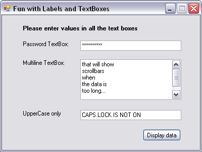
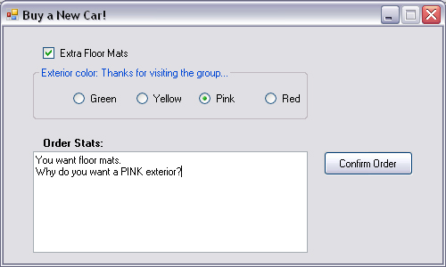
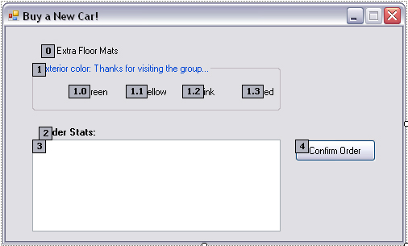
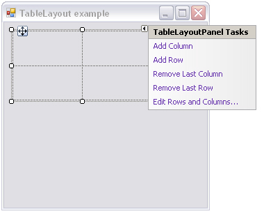

Chapter 21 - Programming with Windows Forms Controls
Content
This chapter is concerned with providing a road map of the controls defined in the System.Windows.Forms namespace. Chapter 19 already gave you a chance to work with some controls mounted onto a main Form such as MenuStrip, ToolStrip, and StatusStrip.
In this chapter, however, you will examine various types that tend to exist within the boundaries of a Form's client area (e.g., Button, MaskedTextBox, WebBrowser, MonthCalendar, TreeView, and the like).
Once you look at the core UI widgets, you will then cover the process of building custom Windows Forms controls that integrate into the Visual Studio 2005 IDE.
The chapter then investigates the process of building custom dialog boxes and wraps up with a discussion of how to establish the docking and anchoring behaviors for your family of GUI types, and the role of the FlowControlPanel and TableControlPanel types supplied by .NET 2.0.
The world of Windows Forms controls
The System.Windows.Forms namespace contains a number of types that represent common GUI widgets typically used to allow you to respond to user input in a Windows Forms application.
Many of the controls you will work with on a day-to-day basis (such as Button, TextBox, and Label) are quite intuitive to work with. Other, more exotic controls and components
(such as TreeView, ErrorProvider, and TabControl) require a bit more explanation.
As you learned in Chapter 19, the System.Windows.Forms.Control type is the base class for all derived widgets. Recall that Control provides the ability to process mouse and keyboard events,
establish the physical dimensions and position of the widget using various properties (Height, Width, Left, Right, Location, etc.), manipulate background and foreground colors,
establish the active font/cursor, and so forth. As well, the Control base type defines members that control a widget's anchoring and docking behaviors.
Reads adding controls to forms by hand at page 700 and 701 of textbook.
Working with the basic controls
The System.Windows.Forms namespace defines numerous "basic controls" that are commonplace to any windowing framework:
- Label, TextBox, and MaskedTextBox
- Button
- CheckBox, RadioButton, and GroupBox
- CheckedListBox, ListBox, and ComboBox
The Label control is capable of holding read-only information (text or image based) that explains the role of the other controls to help the user along.
Unlike the Label control, the TextBox control is typically not read-only (although it could be if you set the ReadOnly property to true),
and it is commonly used to allow the user to enter textual data for processing. The TextBox type can be configured to hold a single line or multiple lines of text,
it can be configured with a password character (such as an asterisk, *), and it may support scroll bars in the case of multiline text boxes.
In addition to the behavior inherited by its base classes, TextBox defines a few particular properties of interest.
| AcceptsReturn |
Gets or sets a value indicating whether pressing Enter in a multiline TextBox control creates a new line of text in the control or
activates the "default button" for the Form.
|
| CharacterCasing |
Gets or sets whether the TextBox control modifies the case of characters as they are typed.
|
| PasswordChar |
Gets or sets the character used to mask characters in a single-line TextBox control used to enter passwords.
|
| ScrollBars |
Gets or sets which scroll bars should appear in a multiline TextBox control. |
| TextAlign |
Gets or sets how text is aligned in a TextBox control, using the HorizontalAlignment enumeration.
|
The below figure illustrates many faces of the TextBox type.

MaskedTextBoxes allow us to specify a valid sequence of characters that will be accepted by the input area (Social Security number, phone number with area code, zip code, or whatnot).
The mask to test against (termed a mask expression) is established using specific tokens embedded into a string literal. Once you have created a mask expression, this value is assigned to the Mask property.
Reads mask tokens of MaskedTextBox at page 707 of textbook.
The role of the System.Windows.Forms.Button type is to provide a vehicle for user confirmation, typically in response to a mouse click or keypress.
The Button class immediately derives from an abstract type named ButtonBase, which provides a number of key behaviors for all derived types (such as CheckBox, RadioButton, and Button).
The System.Windows.Forms namespace defines a number of other types that extend ButtonBase, specifically CheckBox (which can support up to three possible states) and
RadioButton (which can be either selected or not selected). Like the Button, these types also receive most of their functionality from the Control base class.
However, each class defines some additional functionality. First, consider the core properties of the CheckBox widget described in the below table.
| Apperance |
Configures the appearance of a CheckBox control, using the Appearance enumeration. |
| AutoCheck |
Gets or sets a value indicating if the Checked or CheckState value and the CheckBox's appearance are automatically changed when it is clicked.
|
| CheckAlign |
Gets or sets the horizontal and vertical alignment of a CheckBox on a CheckBox control, using the ContentAlignment enumeration (much like the Button type).
|
| Checked |
Returns a Boolean value representing the state of the CheckBox (checked or unchecked). If the ThreeState property is set to true,
the Checked property returns true for either checked or indeterminately checked values.
|
| CheckState |
Gets or sets a value indicating whether the CheckBox is checked, using a CheckState enumeration rather than a Boolean value.
|
| ThreeState |
Configures whether the CheckBox supports three states of selection (as specified by the CheckState enumeration) rather than two. |
The RadioButton type requires little comment, given that it is (more or less) just a slightly redesigned CheckBox.
In fact, the members of a RadioButton are almost identical to those of the CheckBox type. The only notable difference is the CheckedChanged event,
which (not surprisingly) is fired when the Checked value changes. Also, the RadioButton type does not support the ThreeState property, as a RadioButton must be on or off.
Typically, multiple RadioButton objects are logically and physically grouped together to function as a whole. For example, if you have a set of four RadioButton types representing the color choice of a given automobile,
you may wish to ensure that only one of the four types can be checked at a time. Rather than writing code programmatically to do so, simply use the GroupBox control to ensure all RadioButtons are mutually exclusive.

The CheckedListBox widget allows you to group related CheckBox options in a scrollable list control.
It inherits most of its functionality from the ListBox type.
Like a ListBox, a ComboBox allows users to make a selection from a well-defined set of possibilities.
However, the ComboBox type is unique in that users can also insert additional items. Recall that ComboBox derives from ListBox.
Configuring the Tab Order
When a Form contains multiple GUI widgets, users expect to be able to shift focus using the Tab key. Configuring the tab order for your set of controls requires that you understand two key properties: TabStop and TabIndex.
The TabStop property can be set to true or false, based on whether or not you wish this GUI item to be reachable using the Tab key.
Assuming the TabStop property has been set to true for a given widget, the TabOrder property is then set to establish its order of activation in the tabbing sequence (which is zero based).
The Visual Studio 2005 IDE supplies a Tab Order Wizard, which you access by choosing View >> Tab Order (be aware that you will not find this menu option unless the Forms designer is active).
Once activated, your design-time Form displays the current TabIndex value for each widget. To change these values, click each item in the order you choose (see the figure).
To exit the Tab Order Wizard, simply press the Esc key.

Working with more exotic controls
The next task is to examine some GUI widgets, which are a bit more high-powered in their functionality. Thankfully, just because a control may seem "more exotic" does not mean it is hard to work with,
only that it requires a bit more elaboration from the outset. Over the next several pages, we will examine the following GUI elements:
- MonthCalendar
- Tooltip
- TabControl
- TrackBar
- Panel
- UpDown controls
- ErrorProvider
- TreeView
- WebBrowser
The MonthCalendar control allows the user to select a date (or range of dates) using a friendly UI.
Most modern UIs support tool tips. In the System.Windows.Forms namespace, the ToolTip type represents this functionality.
These widgets are simply small floating windows that display a helpful message when the cursor hovers over a given item.
TabControls allow you to selectively hide or show pages of related GUI content via clicking a given tab.
The TrackBar control allows users to select from a range of values, using a scroll bar–like input mechanism.
When working with this type, you need to set the minimum and maximum range, the minimum and maximum change increments, and the starting location of the slider's thumb.
TreeView controls are very helpful types in that they allow you to visually display hierarchical data (such as a directory structure or any other type of parent/child relationship).
The Window Forms TreeView control can be highly customized. If you wish, you can add custom images, node colors, node subcontrols, and other visual enhancements.
The System.Windows.Forms.WebBrowser widget is a highly configurable mini web browser that may be embedded into any Form-derived type.
This control defines a Url property that can be set to any valid URI, formally represented by the System.Uri type.
Panels
As you saw earlier in this chapter, the GroupBox control can be used to logically bind a number of controls (such as RadioButtons) to function as a collective.
Closely related to the GroupBox is the Panel control. Panels are also used to group related controls in a logical unit. One difference is that the Panel type derives from the ScrollableControl class,
thus it can support scroll bars, which is not possible with a GroupBox.
UpDown controls
Windows Forms provide two widgets that function as spin controls (also known as up/down controls). Like the ComboBox and ListBox types,
these new items also allow the user to choose an item from a range of possible selections. The difference is that when you're using a DomainUpDown or NumericUpDown control,
the information is selected using a pair of small up and down arrows.
The DomainUpDown widget allows the user to select from a set of string data. NumericUpDown allows selections from a range of numeric data points. Each widget derives from a common direct base class, UpDownBase.
Reads some important properties of UpDownBase, DomainUpDown and NumericUpDown classes at page 728 of textbook.
ErrorProviders
Most Windows Forms applications will need to validate user input in one way or another. This is especially true with dialog boxes, as you should informusers if they make a processing error before continuing forward.
The ErrorProvider type can be used to provide a visual cue of user input error.
Every GUI widget can set the CausesValidation property to true or false (the default is true). If you set this bit of state data to true, the control forces the other controls on the Form to validate themselves when it receives focus.
Once a validating control has received focus, the Validating and Validated events are fired for each control. In the scope of the Validating event handler, you configure a corresponding ErrorProvider.
Optionally, the Validated event can be handled to determine when the control has finished its validation cycle.
The ErrorProvider type has a small set of members. The most important item for your purposes is the BlinkStyle property, which can be set any of the values of the ErrorBlinkStyle enumeration described in the below table.
| AlwaysBlink |
Causes the error icon to blink when the error is first displayed or when a new error description string is set for the control and the error icon is already displayed.
|
| BlinkIfDifferentError |
Causes the error icon to blink only if the error icon is already displayed, but a new error string is set for the control.
|
| NeverBlink |
Indicates the error icon never blinks. |
Building custom Windows Forms controls
The .NET platform provides a very simple way for developers to build custom UI elements. Unlike ActiveX controls,
Windows Forms controls do not require vast amounts of COM infrastructure or complex memorymanagement.
Rather, .NET developers simply build a new class deriving from UserControl and populate the type with any number of properties, methods, and events.
Reads example of constructing a custom control named CarControl using Visual Studio at page 738 of textbook.
Building custom Dialog boxes
Creating (and showing) a dialog box is no more difficult than inserting a new Form into your current project.
There is no "Dialog" base class in the System.Windows.Forms namespace. Rather, a dialog box is simply a stylized Form.
For example, many dialog boxes are intended to be nonsizable, therefore you will typically want to set the FormBorderStyle property to FormBorderStyle.FixedDialog.
As well, dialog boxes typically set the MinimizeBox and MaximizeBox properties to false. In this way, the dialog box is configured to be a fixed constant.
Finally, if you set the ShowInTaskbar property to false, you will prevent the Form from being visible in the Windows XP task bar.
The DialogResult property
Formally, you can assign the DialogResult property to any value from the DialogResult enumeration:
public enum System.Windows.Forms.DialogResult
{
Abort, Cancel, Ignore, No, None, OK, Retry, Yes
}
This property can be assigned to any Button type (as well as the Form itself ) and allows the parent Form to determine which button the end user selected.
Dynamically positioning Windows Forms controls
To wrap up this chapter, let's examine a few techniques you can use to control the layout of widgets on a Form. By and large, when you build a Form type,
the assumption is that the controls are rendered using absolute position,meaning that if you placed a Button on your Forms designer 10 pixels down and
10 pixels over from the upper left portion of the Form, you expect the Button to stay put during its lifetime.
On a related note, when you are creating a Form that contains UI controls, you need to decide whether the Form should be resizable.
Assume that you have allowed your Form to be resizable. This brings up some interesting questions regarding the contained controls.
For example, if the user makes the Form smaller than the rectangle needed to display each control, should the controls adjust their size (and possibly location) to morph correctly with the Form?
The Anchor property
In Windows Forms, the Anchor property is used to define a relative fixed position in which the control should always be rendered.
Every Control-derived type has an Anchor property, which can be set to any of the values from the AnchorStyles enumeration described in the below table.
| Bottom |
The control's bottom edge is anchored to the bottom edge of its container. |
| Left |
The control's left edge is anchored to the left edge of its container. |
| None |
The control is not anchored to any edges of its container. |
| Right |
The control's right edge is anchored to the right edge of its container. |
| Top |
The control's top edge is anchored to the top edge of its container. |
The Dock property
Another aspect of Windows Forms programming is establishing the docking behavior of your controls. If you so choose, you can set a widget's Dock property to configure
which side (or sides) of a Form the widget should be attached to. The value you assign to a control's Dock property is honored, regardless of the Form's current dimensions.
The below table describes possible options.
| Bottom |
The control's bottom edge is docked to the bottom of its containing control. |
| Fill |
All the control's edges are docked to all the edges of its containing control and sized appropriately. |
| Left |
The control's left edge is docked to the left edge of its containing control. |
| None |
The control is not docked. |
| Right |
The control's right edge is docked to the right edge of its containing control. |
| Top |
The control's top edge is docked to the top of its containing control. |
Table and Flow layout
.NET 2.0 offers an additional way to control the layout of a Form's widgets using one of two layout managers.
The TableLayoutPanel and FlowLayoutPanel types can be docked into a Form's client area to arrange the internal controls.
For example, assume you place a new FlowLayoutPanel widget onto the Forms designer and configure it to dock fully within the parent Form.
Now, add ten new Button types within the FlowLayoutPanel using the Forms designer. If you now run your application, you will notice that
the ten Buttons automatically rearrange themselves in amanner very close to standard HTML.
On the other hand, if you create a Form that contains a TableLayoutPanel, you are able to build a UI that is partitioned into various "cells".

Summary
This chapter rounded off your understanding of the Windows Forms namespace by examining the programming of numerous GUI widgets,
from the simple (e.g., Label) to the more exotic (e.g., TreeView). After examining numerous control types, you moved on to cover the construction of custom controls, including the topic of design-time integration.
In the latter half of this chapter, you learned how to build custom dialog boxes. This chapter concluded by briefly exploring the various anchoring and docking behaviors you can use to enforce a specific layout of your GUI types,
as well as the new .NET 2.0 layout managers.